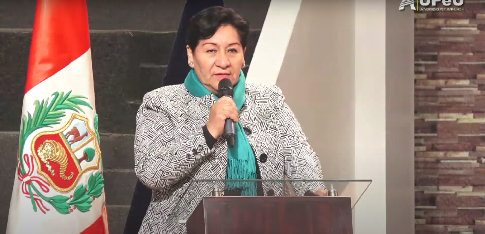

Minería e Innovación
La minería peruana está en la vanguardia de la tecnología, implementando herramientas avanzadas para mejorar la eficiencia y seguridad en sus operaciones. Utilizamos Inteligencia Artificial para analizar datos y predecir eventos críticos, así como "Gemelos Digitales" para realizar ensayos predictivos y optimizar el uso de recursos. Los robots monitorean la seguridad en canales de relaves y las perforadoras autónomas trabajan incansablemente para maximizar la producción. Estas innovaciones no solo reducen costos, sino que también mejoran la seguridad y minimizan el impacto ambiental, haciendo de la minería una industria más sostenible y competitiva.
La minería es un pilar fundamental de la economía peruana, contribuyendo con el 11% del Producto Bruto Interno (PBI) y el 60% del valor total de las exportaciones. Esta industria no solo genera 227,000 empleos directos e indirectos, sino que también produce 8 de los 17 minerales críticos necesarios para la transición energética global. A través de nuestras innovaciones y compromisos con la sostenibilidad, continuamos fortaleciendo el desarrollo económico y social del Perú.